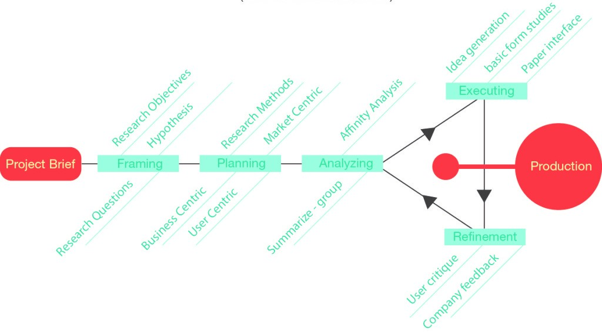

Bluelab pH pen series
A series of water testing pens used to measure the pH and conductivity of soil

Background
Bluelab is a leading manufacturer and exporter of water measurement equipment based in Tauranga, New Zealand. In order to grow sales internationally they needed to offer a complete range of water-testing devices to stockists. At the time there was a gap in their product offering for an affordable water testing device that targeted hobby gardeners in Europe and US.
The Brief
Design a low cost conductivity and pH reader that satisfies the following criteria:
- Designed for manufacture in NZ
- Shows users clearly how to clean and maintain the device
- Can be read in low-light conditions
- Built to withstand the rugged conditions of a greenhouse and must be waterproof
The Result
We created a range of products that have been on the market since 2012 and has a 4+ star rating on Amazon.
“An excellent pH pen! It has powerful, speedy and accurate computing with a user-friendly interface. The difference between a quality Bluelab pen and cheaper option is noticeable immediately in use and design.”
“Best PH pens on the market! Use all of the different meters from Bluelab on our farm and they work amazing! Super reliable, completely submersible, and super accurate as long as you keep storage solution in the pen.”
The Approach
Overview
Here is an overview of the design process for this project
User interviews
I interviewed overseas sales representatives and visited growers in NZ to see how they added fertilizer to the growing medium and did water testing. I then reviewed all the insights from this research and separated it into the following groups to design around:
| Group | Description |
|---|---|
| pH education | There was a need to educate users about how to clean and store the sensors in the product. |
| Price range | Since the product was being manufactured in New Zealand design for low cost manufacturing and quick assembly would have to be considered. |
| Product warranty | Bluelab offers warranties on all their products. The product design would need to well surpass the stated product warranty. |
| Intuitiveness | The product interface would need to suit beginners and industry experts alike. |
| Product storage | When not in use, there would need to be some way to easily store the product and sensors. |
| Product cleaning | The product would make cleaning the sensors as easy as possible. |
Initial concepts
I used the insight groups from the user interviews to generate various concepts that I presented to the company CEO and workmates from different departments.

These were then further refined using Adobe Illustrator.

Prototyping
I then generated paper and foam prototypes of the concepts to show participants from the research phase to get feedback.
UI Flow
The process was iterated several times before we finalized the UI and generated a CAD model.
Tooling CAD Model
As a final check before tooling, we created a final render and SLA 3D printed the CAD model and assembled the sample LCD and PCB to double check part tolerances.

Challenges
Connecting with users to gain feedback was difficult. Products were being sold to retailers via distributors in the US and EU. This made it hard to connect with users. I was able to interview users in NZ and talk to various sales reps in the US but it would have been better to talk to a wider range of users. We were a small team with a limited budget under time constraints to bring this product to the market. We had never developed a product like this before and encountered a lot of issues during development. Luckily the NZ product development community is really supportive and we received a lot of help from specialists when we encountered issues like leaking waterproof seals.
My Role
I was responsible for user research, concept generation, component sourcing, UI design, prototyping, tooling trial runs, accelerated life testing and helped create assembly jigs to speed up assembly.